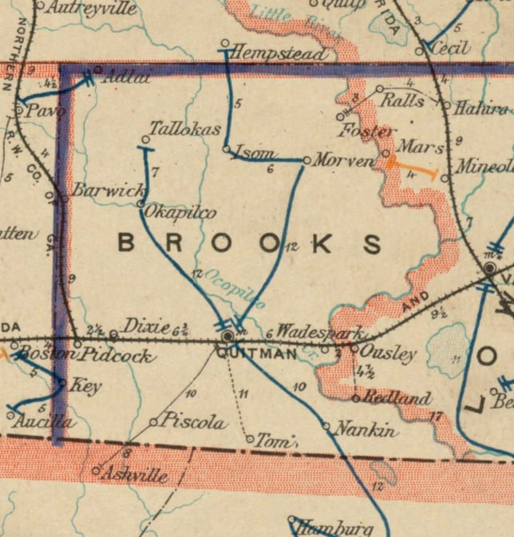
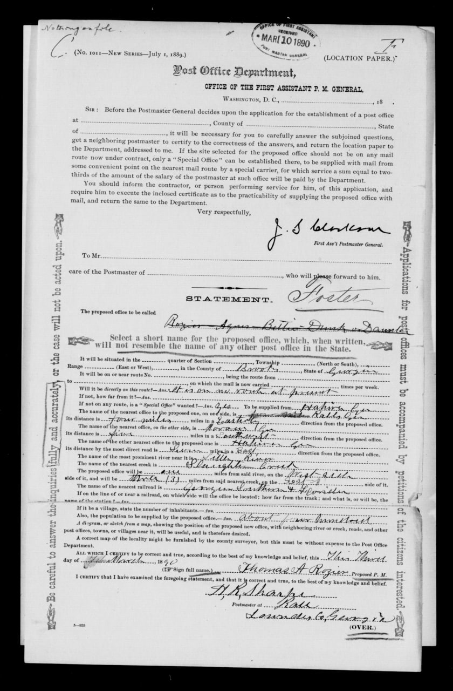
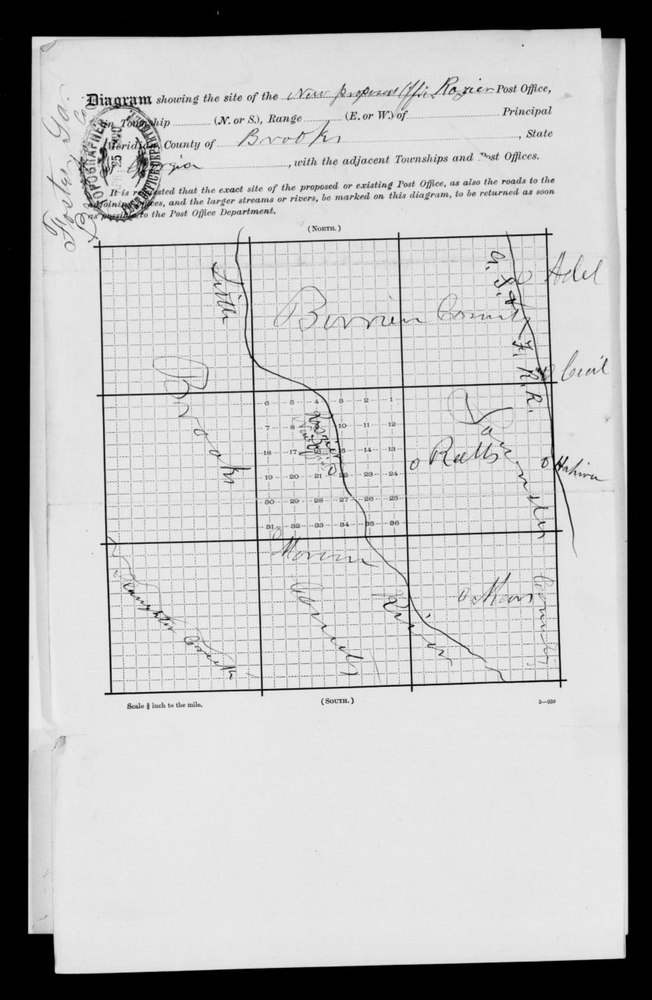

Foster and Little River
Foster was a small post-office and naval-stores village in northern Brooks County. It existed by 1890 and gave way to Barney in 1897 when the post office moved northwest to the new South Georgia Railroad. Federal records document a change of both name and site.
The older neighborhood
Settlement along Little River came long before Foster. The Folsom, Joyce, Gornto, Rountree, Ryall, and other farm neighborhoods already had roads, bridges, schools, churches, mills, and plantations. The separate Little River narrative follows that older network and the weather disruptions that shaped travel through it.
The geography matters because several local names have been blended in later accounts. Folsom Bridge stood upstream in Land Lot 228. Foster's post office was in Land Lot 227 by 1897, near the bridge road but not at the bridge. Joyce's Ferry was the later Miller Bridge crossing downstream, outside Lot 227. It was neither Folsom Bridge nor the Foster site.

A post office before the village
Thomas A. Rozier signed a proposed post-office location paper on March 4, 1890, and the Post Office Department received it six days later. The crossed-out name line begins with Rozier and contains other difficult handwriting. Foster appears above it as the adopted name. Nothing in the surviving paper explains who Foster was or why that name was chosen.
Folks Huxford's postal history dates the office's establishment to April 4, 1890, with Rozier as postmaster. The federal papers describe an office supplied from Hahira and locate it relative to Little River, Slaughter Creek, and the Georgia Southern & Florida Railroad. They do not give a land-lot number. For that reason, the first 1890 office in Land Lot 227 is strong probable rather than directly verified. The later federal diagram identifies Lot 227 as the existing Foster site, and no evidence of an intervening move has been found.


McNeill's Road and Foster's placement
McNeill Road gave Foster's naval-stores operators a wagon route through Folsom Bridge to the railroad depot at Hahira. Construction began during the same spring that the Foster post office opened, making the road part of the transportation network on which the village depended before the South Georgia Railroad reached Barney. The full chronology appears on the Early Roads page.
The separate Folsom Bridge history follows the crossing from its first direct mention in 1871 through the present concrete bridge.
Land Lot 227
An original Brooks County deed now supplies the strongest land evidence. On October 9, 1890, J. H. Croft conveyed McNiel & Rosier about 325 acres on the north side of Land Lot 227 in the 12th District for $1,000. Later records and identity research identify the grantor with high confidence as Jacob Henry "Jack" Croft and standardize the grantees as McNeil & Rozier.
The deed proves that the partnership owned a substantial northern tract by October 1890. It does not locate the first post-office counter, prove that Rozier personally owned it, or show that Croft founded Foster. Rozier's 1890 tax row lists no land. Partnership ownership, a lease, or property reported elsewhere remain possible.
The Croft tract also fits the rough location mark on the 1897 postal diagram, but that hand-drawn map cannot supply a modern parcel or building coordinate. An older derivative map assigns acreage in southern Lot 227 to the estate of James J. or Jackson Joyce and later to his widow, Elizabeth Wells Joyce. The underlying Joyce records have not been found, and the reported Croft and Joyce tracts cannot be reconciled without the original instruments and a survey.
McNeil, Rozier, and the Conoly brothers
James Thomas McNeill is the verified McNeil in the Foster partnership. He came from Cumberland County, North Carolina, and was already building a large naval-stores business around Hahira. Thomas Alligood Rozier, also born in North Carolina, had worked in Ware County before he became Foster's first postmaster and business operator.
The firm name McNeil & Rozier appeared in Ware County newspaper coverage by 1888. An 1888 legal notice concerned 62 barrels of rosin owned by an unresolved debtor, T. P. Jordan, at the Argyle railroad depot. The firm was the judgment creditor. That notice does not prove that McNeil & Rozier owned the rosin or operated an Argyle still. A February 1891 article placed a McNeil & Rozier turpentine farm somewhere in Brooks County, but it did not identify Foster or Lot 227.
Foster's business identity becomes direct in November 1891. The Valdosta Times first named J. T. McNeill in a transaction involving the Foster naval-stores concern. A correction the next week said McNeil & Rozier had sold half of the business to brothers A. J. and H. McLean Conley, while McNeill retained a one-fourth interest. An August 1892 profile expanded his name to James T. McNeill. Research into the brothers establishes them as Angus James Conoly and Hector McLean Conoly. Conoly was the family's usual spelling; Conley and Connolly appeared as newspaper variants.
Life in the village
The surviving "Foster Notes" columns show a place larger than a post-office counter but smaller than a town. A report dated March 2, 1892, said the old Croft house had been dismantled and removed and a new cottage was being built in its place. Another cottage called Bachelor's Hall stood east of the commissary. Other items mention shade trees, a cottage waiting for paint, a wagon shelter, a hotel cook, physicians, horses, poultry, fishing, parties, and regular travel to Hahira and Morven.
The turpentine business set the rhythm. Workers cut boxes in the pine trees, collected gum, and hauled naval stores toward Hahira. An August 1892 report said heavy rain washed gum from the boxes and raised Little River enough to stop hauling. Hahira already had a railroad and depot, which made it Foster's practical shipping connection before the South Georgia Railroad reached the Barney site.
Gornto School House stood about a mile and a half west of Foster. A Brooks County Alliance gathering there on July 7, 1892, reportedly fed roughly a thousand people. That crowd was not Foster's population. It shows how a small village could serve as a reference point for a much wider rural community.
From Foster to Barney
The last located item under the "Foster Notes" heading appeared in March 1894, although newspapers still referred to Foster afterward. In 1897, the new South Georgia Railroad created a better mail and shipping point three miles northwest.
The federal relocation packet is explicit. It places the existing Foster office in Land Lot 227 and the proposed Barney office in Land Lot 320. The application requested a change of both name and site, with the new office supplied by the railroad mail train. Thomas A. Rozier continued as postmaster, linking the old and new places administratively.
Local history says Foster's metal commissary building was pulled to Barney by mules and became the first post office there. The story is strong probable because it fits the documented relocation and appears in more than one local account. It is not established by the federal papers themselves. Local memory gives about two miles for the building move, while the postal diagram gives three miles between office sites. The figures may use different endpoints or ordinary rounding.
Foster did not simply change its road sign. Its postal function, a building remembered as the old commissary, and some of its people moved toward the railroad. The earlier village remained a separate place in Lot 227, and its exact footprint is still unknown.
What remains unresolved
The research has established Foster's post office by 1890, McNeil & Rozier's Lot 227 land purchase, the Conoly investment, the village's working life, and the 1897 move to Barney. Several questions remain open:
- the person or reason behind the name Foster;
- the exact location of the 1890 post office, commissary, still, hotel, and cottages;
- Croft's own acquisition of the northern tract;
- the original record behind the reported Joyce acreage;
- a complete ownership and tax chain for Lot 227;
- secure identities for Theodore Byrd, Archie McBryde, and the 1894 Joe Rogers;
- the exact building route and endpoints remembered in the move to Barney.
These are evidence limits, not gaps to be filled with likely stories.
Sources
- U.S. Post Office Department, Foster location paper received March 10, 1890, and Foster-to-Barney change-of-name-and-site packet, February 1897, Reports of Site Locations, M1126, roll 102, NAID 68271694.
- U.S. Post Office Department, Post route map of the State of Georgia, December 1, 1895, Norman B. Leventhal Map & Education Center Collection, Boston Public Library.
- Brooks County deed, J. H. Croft to McNiel & Rosier, October 9, 1890, about 325 acres on the north side of Land Lot 227, FamilySearch image ARK 3:1:3Q9M-C9BC-V3DG-R.
- Georgia Geospatial Information Office, "Georgia Landlots and Militia Districts," Brooks County, district 12, Lot 227, OBJECTID 424464.
- R. D. Flippen, Map of Brooks County, Georgia (1908), Georgia Archives item
cmf:285; used for Land Lots 227 and 228, Folsom Bridge, Miller Bridge, Gornto School House context, and the J. J. Rogers residence. - Brooks County tax digest, Morven District 660, Thomas A. Rozier, 1890, Ancestry collection 1729, record 716589.
- The Valdosta Times, McNeil & Rozier and Foster transaction reports, November 7 and 14, 1891.
- The Valdosta Times, "Notes from Foster" and "Foster Notes" items, March 1892 through March 1894, including the old Croft house, cottages, commissary, Conoly family, Byrd, McBryde, Neill, Rogers, turpentine work, and community life.
- The Valdosta Times, "Foster Notes," August 27, 1892, p. 8. Heavy rains washed gum from the turpentine boxes and raised Little River enough to stop hauling naval stores to Hahira, Foster's shipping point. Original newspaper page and article clipping.
- The Valdosta Times, "A Visit to the Naval Stores Plant of J. T. McNeill & Co.," August 13, 1892.
- The Valdosta Times, September 21, 1889, p. 3, report on the pending Hahira-to-Miller Bridge and Hahira-to-Folsom Bridge routes, Newspapers.com image 889791607; Hahira-to-Folsom Bridge road reports, March 29 and April 12, 1890; August 29, 1891; December 24, 1892; December 5, 1896; February 13 and May 25, 1897.
- Map of Lowndes County, Georgia, Hudgins Co./Southern Map Co., about 1910, Georgia Archives county-map record
cmf:352; used for McNeil Road and the separate Hahira-to-Miller Bridge route. - Folks Huxford, The History of Brooks County, Georgia, 1858-1948 (1948), including the Foster postal history and later Barney account.
- Fannie Bourquin Edmondson, Brooks County local history, Chapter 23; used as supplemental evidence for the Foster commissary building's move to Barney.
- Foster Profiles, with individual evidence trails, source lists, identity controls, and research limits for the people named on this page.